先把所有镜头拉回同一条起跑线
一级校正只做曝光、白平衡和对比度的统一：先把每个镜头的黑位、白位和肤色对齐，再谈风格。用示波器看，不靠眼睛在暗房里猜。
顺序：曝光归一 → 白平衡归一 → 对比度归一 → 镜头之间跳切检查。任何一步没统一，二级校正只会把偏色锁死。
边界
一级校正不是“每个镜头都调成一样亮”。不同景别、不同光位允许有差异；统一的是基准，不是画面情绪。
现场
先拍一张灰卡或色卡：黑位压到 0 到 5，白位不超过 100；同场镜头逐条对齐，再看肤色线。
DIAGRAM / COLOR
一级校正：曝光、白平衡、对比

怎么做
- 先拍灰卡或色卡，黑位压到 0 到 5，白位不超过 100。
- 同场镜头逐条对齐曝光和白平衡，再看肤色线。
- 技术问题清零后，才加对比和风格。
别踩
别用 LUT 掩盖技术问题；它会把问题染得更好看。
图片说明：本页封面、图解与步骤图是编辑示意或结构图，不是本页实测照片，也不能当作器材测试证据；AI 辅助生成的图会在图注标出。判断器材或画面，以正文的测试条件与现场记录为准。